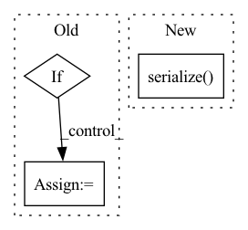

Pattern ID :31182
Before Change
"summary": .., "conditions_table": .., "value", "display": ..}
result_json = self._get_metadata()
if self.conditions_results:
cond_df = get_conditions_table(self, icon_html=False)
result_json["conditions_table"] = cond_df.data.to_json(orient="records")
if isinstance(self.value, pd.DataFrame):
result_json["value"] = self.value.to_json()After Change
// TODO: not sure if the `with_display` parameter is needed
// add deprecation warning if it is not needed
return jsonpickle.dumps(
CheckResultJsonSerializer(self).serialize() ,
unpicklable=False
)
In pattern: SUPERPATTERN
Frequency: 3
Non-data size: 3
Instances Fragment ID: 91547700
Project Name: deepchecks/deepchecks
Commit Name: a5fcf3ee4a3a25908e587fc7d0458efd4eb7a30b
Time: 2022-05-04
Author: 71635444+yromanyshyn@users.noreply.github.com
File Name: deepchecks/core/check_result.py
M Class Name: CheckResult
N Class Name: CheckResult
M Method Name: to_json(2)
N Method Name: to_json(2)
M Parent Class:
N Parent Class:
M File Name: deepchecks/core/check_result.py
N File Name: deepchecks/core/check_result.py
M Start Line: 329
M End Line: 346
N Start Line: 291
N End Line: 291
Before Change
def _ipython_display_(self):
Display the check failure.
check_html = f"<h4>{self.header}</h4>"
if hasattr(self.check.__class__, "__doc__"):
summary = get_docs_summary(self.check)
check_html += f"<p>{summary}</p>"
check_html += f"<p style="color:red">{self.exception}</p>"
display_html(check_html, raw=True)
After Change
def _ipython_display_(self):
Display the check failure.
display_html(
CheckFailureHtmlSerializer(self).serialize() ,
raw=True
)
Fragment ID: 91547713
Project Name: deepchecks/deepchecks
Commit Name: a5fcf3ee4a3a25908e587fc7d0458efd4eb7a30b
Time: 2022-05-04
Author: 71635444+yromanyshyn@users.noreply.github.com
File Name: deepchecks/core/check_result.py
M Class Name: CheckFailure
N Class Name: CheckFailure
M Method Name: _ipython_display_(1)
N Method Name: _ipython_display_(1)
M Parent Class:
N Parent Class:
M File Name: deepchecks/core/check_result.py
N File Name: deepchecks/core/check_result.py
M Start Line: 548
M End Line: 553
N Start Line: 525
N End Line: 525
Before Change
{"name": .., "params": .., "header": .., "display": ..}
result_json = self._get_metadata()
if with_display:
result_json["display"] = [("html", f"<p style="color:red">{self.exception}</p>")]
return jsonpickle.dumps(result_json, unpicklable=False)
def to_wandb(self, dedicated_run: bool = True, **kwargs: Any):After Change
// TODO: not sure if the `with_display` parameter is needed
// add deprecation warning if it is not needed
return jsonpickle.dumps(
CheckFailureJsonSerializer(self).serialize() ,
unpicklable=False
)
Fragment ID: 91547720
Project Name: deepchecks/deepchecks
Commit Name: a5fcf3ee4a3a25908e587fc7d0458efd4eb7a30b
Time: 2022-05-04
Author: 71635444+yromanyshyn@users.noreply.github.com
File Name: deepchecks/core/check_result.py
M Class Name: CheckFailure
N Class Name: CheckFailure
M Method Name: to_json(2)
N Method Name: to_json(2)
M Parent Class:
N Parent Class:
M File Name: deepchecks/core/check_result.py
N File Name: deepchecks/core/check_result.py
M Start Line: 505
M End Line: 508
N Start Line: 473
N End Line: 473